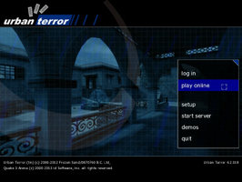
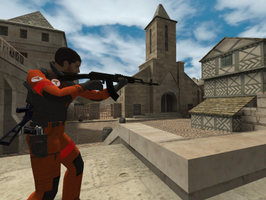
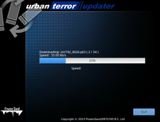

Urban Terror
Dieser Artikel wurde für die folgenden Ubuntu-Versionen getestet:
Ubuntu 16.04 Xenial Xerus
Zum Verständnis dieses Artikels sind folgende Seiten hilfreich:
Urban Terror  (UrT) ist eine eigenständig lauffähige Modifizierung des Titels Quake III Arena (Q3A) aus dem Hause id Software. Der Egoshooter ähnelt vom Spielprinzip an Counter-Strike. Es gibt 6 verschiedene Spielmodi u.a. Capture The Flag (CTF) und Team Deathmatch (TDM).
(UrT) ist eine eigenständig lauffähige Modifizierung des Titels Quake III Arena (Q3A) aus dem Hause id Software. Der Egoshooter ähnelt vom Spielprinzip an Counter-Strike. Es gibt 6 verschiedene Spielmodi u.a. Capture The Flag (CTF) und Team Deathmatch (TDM).
|  |  |
| Menü | Spielszene |
Installation¶
Für die Installation von Urban Terror bieten sich mehrere Wege an, welche im folgenden aufgezeigt werden:
Desura¶
Das Spiel kann über die Internetseite oder den Client zur Spieleliste hinzugefügt und über letzteren gestartet werden [1].
Projektseite¶
UrTUpdater¶
Mit dem UrTUpdater, welcher auch für Updates verwendet wird, kann das Spiel ebenfalls installiert werden. Den aktuellen Installer  herunterladen und entpacken [2] z.B. nach ~/Spiele. Nun in das entsprechende Verzeichnis wechseln und den Updater starten [3]:
herunterladen und entpacken [2] z.B. nach ~/Spiele. Nun in das entsprechende Verzeichnis wechseln und den Updater starten [3]:
./UrTUpdater_Ded.sh
Nach dem Download des Spiels bestätigt man, dass die Quake3-Engine heruntergeladen werden soll. Über Quake3-UrT.i386 bzw. Quake3-UrT.x86_64 kann das Spiel aus dem Installationsverzeichnis heraus gestartet [4] werden. Auf Wunsch einen Menüeintrag [5] vornehmen.
Beide Dateien muss man vorher aber noch ausführbar machen.
|  |
| UrTUpdater |
Vollständiger Download¶
Eine weitere Alternative bietet diese Möglichkeit der Installation. Von der Projektseite das Archiv UrbanTerror*_full.zip herunterladen und anschließend nach ~/Spiele entpacken [2]. In das Installationsverzeichnis wechseln und das Spiel mittels Quake3-UrT.i386 bzw. Quake3-UrT.x86_64 starten [4] und ggf. einen Menüeintrag erstellen [5].
Server¶
Eine Liste der zur Verfügung stehenden Spieleserver ist auf der Projektseite zu finden. Diese können nach unterschiedlichen Kriterien (z.B. Standort in Deutschland / Europa) gefiltert werden.
Update¶
Um ein Update durchzuführen muss der UrTUpdater verwendet werden.
Maps¶
Zusatzkarten können auf einer der verlinkten Seiten bezogen werden:
Die Karten liegen entweder als .zip-Datei oder .pk3-Datei vor. Lediglich die gezippten Archive werden entpackt [3]. Die Karten im Installationsverzeichnis in den Unterordner q3ut4 kopiert.
Handbuch¶
Ein ausführliches Handbuch ist auf urbanterror.info zu finden.
Probleme & Lösungen¶
Tastenkürzel¶
| Tastenkürzel | |
| Taste(n) | Funktion |
 | Steuerung |
| Sprung | |
| ⇧ | Rennen / Gehen / Ducken / Kriechen |
| M | Sprint |
 | Schießen |
 (Mausrad) (Mausrad) | Waffenwechsel |
| Strg | Benutzen / Öffnen |
| Q | Wunden heilen |
Eine genaue Übersicht ist auf der Projektseite zu finden.

Infobox¶
| Urban Terror | |
| Genre: | Ego-Shooter |
| Sprache: |  |
| Veröffentlichung: | 1999+ |
| Entwickler: | Frozen Sand, LLC (ehem. Silicon Ice Development) |
| Systemvoraussetzungen: | Pentium IV 1,2 GHz / 128 MB Grafikkarte |
| Medien: | Download |
| Strichcode / EAN / GTIN: | - |
| Läuft mit: | nativ |
- Erstellt mit Inyoka
-
 2004 – 2017 ubuntuusers.de • Einige Rechte vorbehalten
2004 – 2017 ubuntuusers.de • Einige Rechte vorbehalten
Lizenz • Kontakt • Datenschutz • Impressum • Serverstatus -
Serverhousing gespendet von